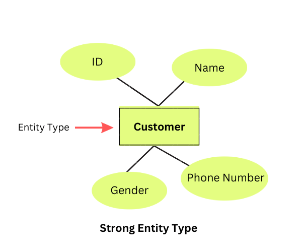
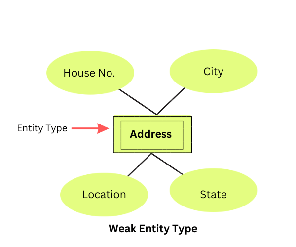

Entity : Entity is a collection of data or we can say it is a structure which is having some attributes.Entity relationship model is a graphical represtation of database so wan the database designer the starts Designing database.
1. Strong Entity
2. Weak Entity
1. Strong Entity : A strong entity in DBMS is an independent table that doesn't rely on any other tables for its existence. A primary key uniquely identifies each row in the table, and foreign keys are used to relate this table to other tables. NULL values are not allowed in the primary key columns.
Example : example of a strong entity type would be "customer" in a customer relational database table. The customerID attribute would be the primary key (and it can't have duplicate values or be NULL), and other information about the customer would be stored in separate attributes such as "firstname," "last name," etc.
2. Weak Entity :A weak entity type is a dependent table that relies on another table for its existence; it has no meaningful attributes of its own except for the foreign key from the parent table. For a weak entity type to exist, it must have some relationship with another (parent) table; otherwise, it wouldn't appear in the database
Example : example of a weak entity type is an "order." It has no meaning by itself–it must be placed by some customer so it has a foreign key relation to the "customer" table–but it has several attributes of its own such as orderID, productID, etc.
Entity set : Student
An entity set is a group of similar kind of entities. It may contain entities with attribute sharing similar values. Entities are represented by their properties, which also called attributes. All attributes have their separate values. For example, a student entity may have a name, age, class, as attributes.